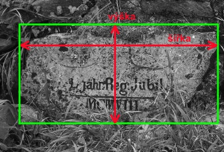
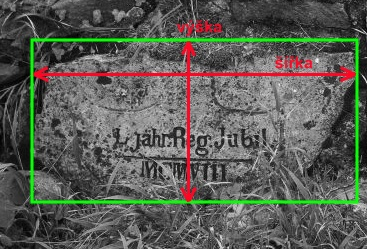
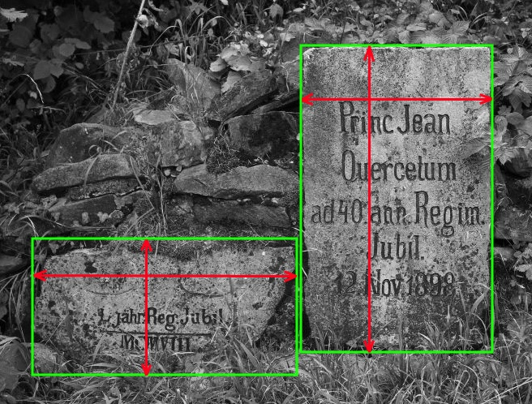

Mìøení jubilejních kamenù
Souèástí dokumentace lichtenštejnskıch jubilejních kamenù by mìlo bıt také mìøení jejich rozmìrù. Dùvodem je vìtší pøesnost popisu. Znalost rozmìrù však také umo�òuje porovnávat rùzné kameny v rámci tého� panství, u kterıch lze pøedpokládat, �e jsou dílem tıch� kameníkù. Rozmìry kamenù se udávají v centimetrech.
Dùle�ité je zvolit jednotnı zpùsob mìøení. Nìkteré jubilejní kameny jsou zasazeny do kupky drobnıch kamenù nebo valu z hlíny. Kupka kamenù ani hlinìnı val se nemìøí. Pøedmìtem mìøení je pouze kamenná deska.
Mìøí se rozmìry nejmenšího kvádru, do nìho� se vejde svisle umístìnı památník (resp. jeho nadzemní èást). Na obrázcích je naznaèen zpùsob mìøení vıšky a šíøky. Tlouš�ka se mìøí obdobnım zpùsobem. Je-li kámen umístìn v terénu, mìøí se vıška nadzemní èásti. Pokud je kámen zcela vyvrácen nebo umístìn v interiéru (napø. v muzeu), mìøí se celá jeho vıška - tj. vèetnì èásti, která byla pùvodnì pod zemí.
 

Na ji�ní Moravì byly èasto umístìny na jednom místì dva pamìtní kameny - první (vìtší) z roku 1898 a druhı (menší) z roku 1908. V tìchto pøípadech je tøeba uvést rozmìry pro oba kameny.

Pøíklad uvedení rozmìrù (v poøadí vıška, šíøka, tlouš�ka): Velkı kámen 71 x 48 x 14 cm, malı kámen 43 x 60 x 29 cm.